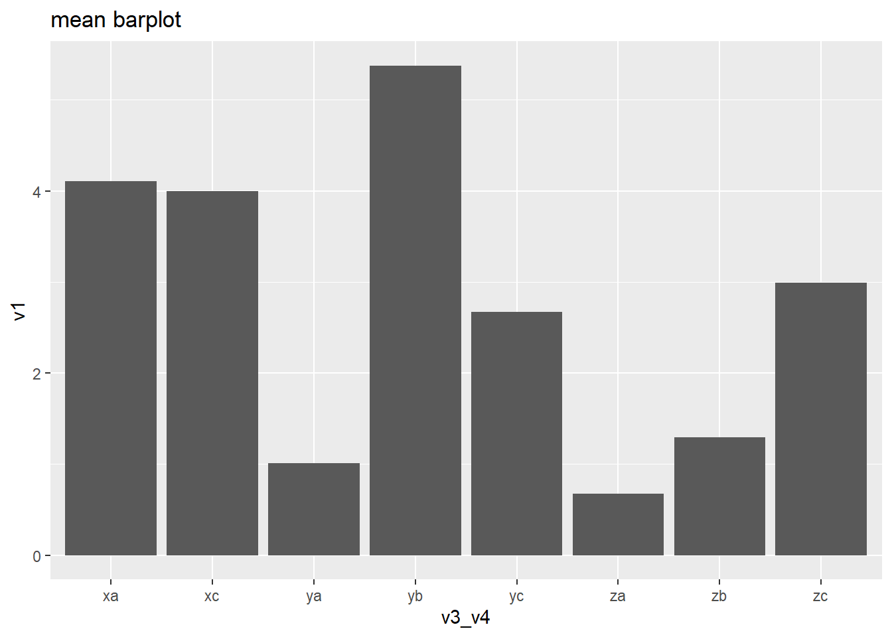
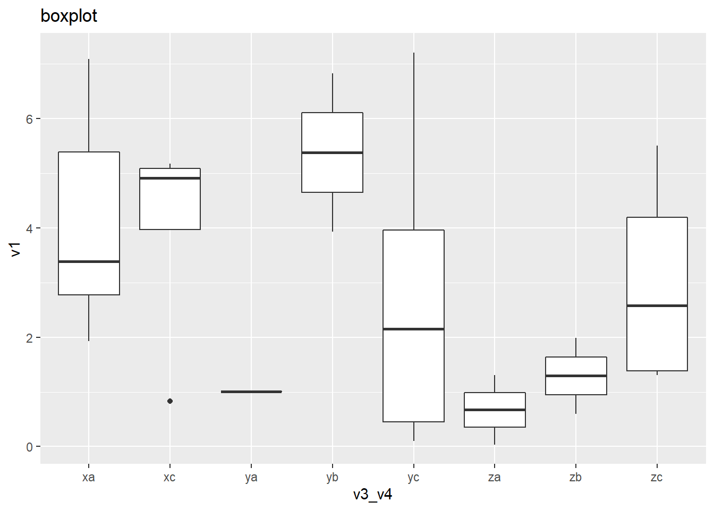
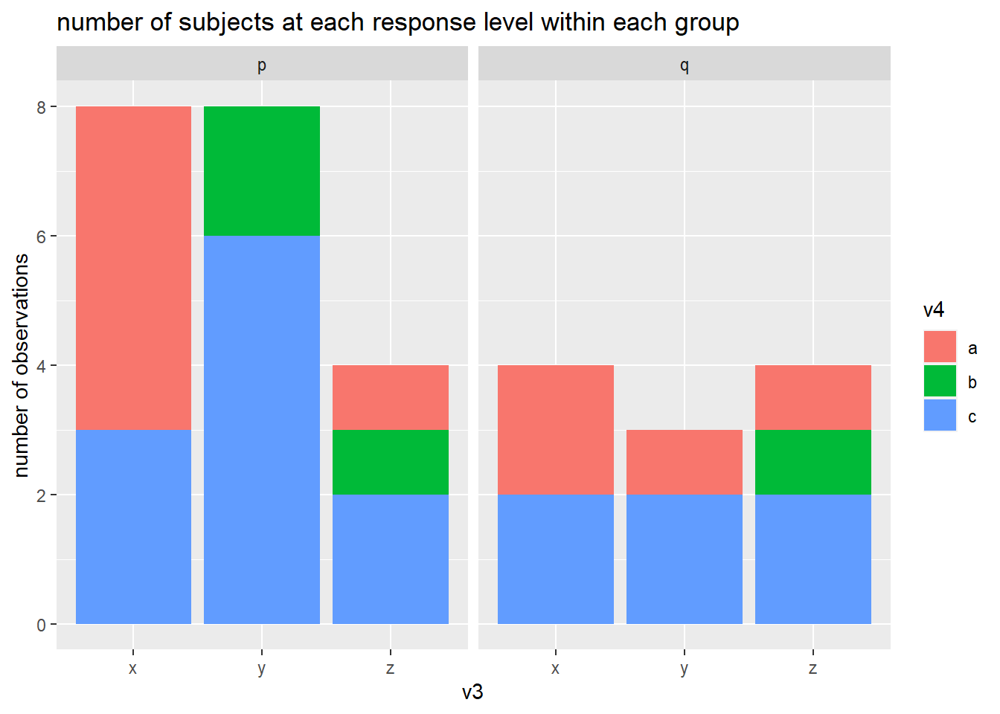

Translation Syntax Example
Package Deposit
## install.packages("descr")
library(descr) # freq()
## install.packages("ggplot2")
library(ggplot2)Data Management
Data Management
create a data set with categorical and numeric variables and save as .csv
# numerical variable
v1 <- runif(100, 0, 7.5) # generate 10 random numbers between 0 and 7.5
v2 <- runif(100, 7.5, 15)
# categorical variable
v3 <- sample(c("x", "y", "z", "n"), size = 100, replace = T) # randomly sample 10 observations out of x, y, z
v4 <- sample(c("a", "b", "c", "n"), size = 100, replace = T)
v5 <- sample(c("p", "q", "n"), size = 100, replace = T)
# combine variables into a dataframe
ie.df <- data.frame(v1, v2, v3, v4, v5)
# save as csv
write.table(ie.df, file = "C:\\Users\\tonyr\\Downloads\\QAC201Z_Material\\example.csv", sep = ",", row.names = F)sort the data
sort by ascending v1
ie.df <- ie.df[order(ie.df$v1, decreasing = F), ]select responses
subset observations with x
ie.x <- ie.df[ie.df$v3 == "x", ]subset observations with x and a
ie.xa <- ie.df[ie.df$v3 == "x" & ie.df$v4 == "a", ]Deal with missing data
label missing data as NA
- v3, v4, v5 “n” codes for missing data
ie.df$v3[ie.df$v3 == "n"] <- NA
ie.df$v4[ie.df$v4 == "n"] <- NA
ie.df$v5[ie.df$v5 == "n"] <- NAsubset observations without NA values in any variables
na.omit(ie.df)## v1 v2 v3 v4 v5
## 91 0.1809376 13.857174 z b q
## 2 0.3137385 9.997410 x a p
## 11 0.6342106 10.658491 z a q
## 35 0.6881439 9.292938 x c p
## 16 0.8506247 11.629269 y c p
## 56 0.8786280 14.168429 y a q
## 30 0.9426692 7.536106 z a p
## 72 0.9504764 8.411291 z b q
## 88 1.0975797 8.737320 x c p
## 53 1.1443043 7.686099 y c p
## 8 1.3148100 11.901985 y a q
## 26 1.4850058 9.037147 z a q
## 19 1.8234813 11.557607 y b p
## 6 1.9729622 13.080519 y a p
## 14 2.1725477 9.011935 y c p
## 64 2.1754367 9.320779 x c p
## 94 2.2202551 13.773060 z c p
## 23 2.2758308 12.922737 x c q
## 77 2.3349510 11.910825 y a p
## 17 2.4436156 10.399590 x a p
## 76 2.6159111 13.667967 x a q
## 15 2.6854367 12.125717 x c p
## 4 2.9109295 14.887698 y a p
## 68 3.2571004 9.162422 z b p
## 95 3.5536853 13.487517 x c p
## 98 4.0449314 11.413163 x a q
## 40 4.2917259 8.353341 z c q
## 71 4.3917724 13.503293 y b p
## 44 4.4014720 10.000651 y a p
## 97 4.4176894 8.157538 z b q
## 74 4.4538346 10.936912 x b q
## 63 5.4578971 13.419003 x c q
## 36 5.5281771 10.786996 z b p
## 49 5.8327903 8.368810 x a q
## 41 5.9139618 7.570918 x a p
## 70 6.1955181 13.544524 x a q
## 45 6.7811127 8.681545 x a p
## 100 6.8775520 8.258503 x a q
## 34 7.0427935 13.589315 z c q
## 31 7.0807861 8.382733 y c p
## 29 7.0908623 13.062486 y c p
## 75 7.0931606 13.011086 y b p
## 50 7.2751171 7.601265 z c p
## 9 7.3930629 13.492215 y a psubset observations without NA values in selected variable
ie.df[!is.na(ie.df$v3),]## v1 v2 v3 v4 v5
## 99 0.1249986 8.125656 y a <NA>
## 81 0.1529762 9.123689 x b <NA>
## 91 0.1809376 13.857174 z b q
## 2 0.3137385 9.997410 x a p
## 93 0.3474294 10.008184 z <NA> q
## 28 0.5320089 13.324051 x a <NA>
## 11 0.6342106 10.658491 z a q
## 35 0.6881439 9.292938 x c p
## 16 0.8506247 11.629269 y c p
## 56 0.8786280 14.168429 y a q
## 30 0.9426692 7.536106 z a p
## 72 0.9504764 8.411291 z b q
## 46 1.0168802 9.480107 y <NA> q
## 88 1.0975797 8.737320 x c p
## 53 1.1443043 7.686099 y c p
## 8 1.3148100 11.901985 y a q
## 26 1.4850058 9.037147 z a q
## 87 1.5234112 7.735724 x <NA> q
## 66 1.5863071 14.110067 y b <NA>
## 19 1.8234813 11.557607 y b p
## 6 1.9729622 13.080519 y a p
## 14 2.1725477 9.011935 y c p
## 64 2.1754367 9.320779 x c p
## 24 2.1793211 11.303995 x c <NA>
## 94 2.2202551 13.773060 z c p
## 23 2.2758308 12.922737 x c q
## 77 2.3349510 11.910825 y a p
## 17 2.4436156 10.399590 x a p
## 76 2.6159111 13.667967 x a q
## 85 2.6770300 8.769323 z a <NA>
## 15 2.6854367 12.125717 x c p
## 4 2.9109295 14.887698 y a p
## 80 2.9450043 9.580851 z <NA> q
## 96 3.0833165 9.184751 z <NA> q
## 60 3.0894140 12.751270 x <NA> q
## 68 3.2571004 9.162422 z b p
## 32 3.3692373 12.794185 x <NA> p
## 38 3.4850452 14.696348 z <NA> <NA>
## 43 3.4891033 10.944184 z a <NA>
## 95 3.5536853 13.487517 x c p
## 83 3.6816451 7.730128 y b <NA>
## 10 3.9907376 11.234918 z <NA> p
## 98 4.0449314 11.413163 x a q
## 40 4.2917259 8.353341 z c q
## 69 4.3263081 11.287222 z c <NA>
## 71 4.3917724 13.503293 y b p
## 44 4.4014720 10.000651 y a p
## 97 4.4176894 8.157538 z b q
## 74 4.4538346 10.936912 x b q
## 54 4.5154501 12.077337 x b <NA>
## 37 4.8554841 8.771589 x c <NA>
## 84 5.2824370 13.882283 x <NA> <NA>
## 63 5.4578971 13.419003 x c q
## 36 5.5281771 10.786996 z b p
## 25 5.7889648 12.617723 x <NA> p
## 49 5.8327903 8.368810 x a q
## 7 5.8821418 12.635148 y <NA> p
## 41 5.9139618 7.570918 x a p
## 42 5.9865149 14.996885 x <NA> q
## 70 6.1955181 13.544524 x a q
## 45 6.7811127 8.681545 x a p
## 100 6.8775520 8.258503 x a q
## 48 7.0290600 11.781323 z b <NA>
## 34 7.0427935 13.589315 z c q
## 31 7.0807861 8.382733 y c p
## 29 7.0908623 13.062486 y c p
## 75 7.0931606 13.011086 y b p
## 50 7.2751171 7.601265 z c p
## 51 7.3561956 12.465326 z c <NA>
## 9 7.3930629 13.492215 y a pcreate secondary variables
bin v1 into 4 sections
ie.df$v6[ie.df$v1 < 2] <- 1
ie.df$v6[ie.df$v1 >=2 & ie.df$v1 < 4] <- 2
ie.df$v6[ie.df$v1 >= 4 & ie.df$v1 < 6] <- 3
ie.df$v6[ie.df$v1 >= 6 & ie.df$v1 < 8] <- 4combine v3 and v4 into v7
ie.df$v7[is.na(ie.df$v3) | is.na(ie.df$v4)] <- NA
ie.df$v7[ie.df$v3 == "x" & ie.df$v4 == "a"] <- "xa"
ie.df$v7[ie.df$v3 == "x" & ie.df$v4 == "b"] <- "xb"
ie.df$v7[ie.df$v3 == "x" & ie.df$v4 == "c"] <- "xc"
ie.df$v7[ie.df$v3 == "y" & ie.df$v4 == "a"] <- "ya"
ie.df$v7[ie.df$v3 == "y" & ie.df$v4 == "b"] <- "yb"
ie.df$v7[ie.df$v3 == "y" & ie.df$v4 == "c"] <- "yc"
ie.df$v7[ie.df$v3 == "z" & ie.df$v4 == "a"] <- "za"
ie.df$v7[ie.df$v3 == "z" & ie.df$v4 == "b"] <- "zb"
ie.df$v7[ie.df$v3 == "z" & ie.df$v4 == "c"] <- "zc"sum up v1 and v2 into v7
ie.df$v8 <- ie.df$v1 + ie.df$v2rename variable
names(ie.df)[names(ie.df) == "v8"] <- "v1_v2"
names(ie.df)[names(ie.df) == "v7"] <- "v3_v4"
names(ie.df)[names(ie.df) == "v6"] <- "v1_level"label variable values
levels(ie.df$v1_level) <- c("lowest", "low", "high", "highest")Univariate Analysis
Univariate Analysis
Categorical Variables
frequency
# frequency
#library(descr)
freq(as.ordered(ie.df$v3_v4))
## as.ordered(ie.df$v3_v4)
## Frequency Percent Valid Percent Cum Percent
## xa 10 10 17.544 17.54
## xb 3 3 5.263 22.81
## xc 9 9 15.789 38.60
## ya 8 8 14.035 52.63
## yb 5 5 8.772 61.40
## yc 5 5 8.772 70.18
## za 5 5 8.772 78.95
## zb 6 6 10.526 89.47
## zc 6 6 10.526 100.00
## NA's 43 43
## Total 100 100 100.000frequency bar plot w. ggplot
#library(ggplot2)
ggplot(data = na.omit(ie.df)) + # na.omit() removes any observations containing NA
geom_bar(aes(x = v3_v4)) +
ggtitle("v3_v4 frequency barplot")
Numeric Variables
mean
mean(ie.df$v1_v2, na.rm = T)## [1] 14.34844standard deviation
sd(ie.df$v1_v2, na.rm = T)## [1] 3.215754histogram w. ggplot
ggplot(data = ie.df)+
geom_histogram(aes(x = v1_v2))+
ggtitle("v1_v2 histogram")
Bivariate Analysis
Bivariate Analysis
Categorical-Categorical (crosstabs)
crosstabs
table(ie.df$v3, ie.df$v4)##
## a b c
## x 10 3 9
## y 8 5 5
## z 5 6 6column proportions
prop.table(table(ie.df$v3, ie.df$v4), 2) # col proportions##
## a b c
## x 0.4347826 0.2142857 0.4500000
## y 0.3478261 0.3571429 0.2500000
## z 0.2173913 0.4285714 0.3000000row proportions
prop.table(table(ie.df$v3, ie.df$v4), 1) # row proportions##
## a b c
## x 0.4545455 0.1363636 0.4090909
## y 0.4444444 0.2777778 0.2777778
## z 0.2941176 0.3529412 0.3529412cell proportions
prop.table(table(ie.df$v3, ie.df$v4)) # cell proportions##
## a b c
## x 0.17543860 0.05263158 0.15789474
## y 0.14035088 0.08771930 0.08771930
## z 0.08771930 0.10526316 0.10526316Graphs
for binary categorical response
# for binary categorical response
graph_data <- data.frame(v3 = na.omit(ie.df)$v3,
v5 = ifelse(na.omit(ie.df)$v5 == "p", 0, 1))
ggplot(data = graph_data)+
stat_summary(aes(x=v3, y = v5), fun = "mean", geom = "bar")+
ylab("poriton of responses that are '1 (aka. q)'")+
ggtitle("percentage of q within v3 groups")for multi-level categorical responses
# stacked barplot for mutli-level categorical responses
graph_data <- data.frame(v4 = c(rep("a", 3), rep("b", 3), rep("c", 3)),
v3 = rep(c("x", "y", "z"), 3),
value = as.numeric(table(ie.df$v3, ie.df$v4)))
ggplot(data = graph_data, aes(fill = v4, x = v3, y = value))+
geom_bar(position = "stack", stat = "identity")+
ylab("number of observations")+
ggtitle("number of subjects at each response level within each group")
Numeric-Categorical
stats by group
Mean
by(ie.df$v1, ie.df$v3_v4, mean, na.rm = T)## ie.df$v3_v4: xa
## [1] 4.155114
## ------------------------------------------------------------
## ie.df$v3_v4: xb
## [1] 3.040754
## ------------------------------------------------------------
## ie.df$v3_v4: xc
## [1] 2.774313
## ------------------------------------------------------------
## ie.df$v3_v4: ya
## [1] 2.666477
## ------------------------------------------------------------
## ie.df$v3_v4: yb
## [1] 3.715273
## ------------------------------------------------------------
## ie.df$v3_v4: yc
## [1] 3.667825
## ------------------------------------------------------------
## ie.df$v3_v4: za
## [1] 1.845604
## ------------------------------------------------------------
## ie.df$v3_v4: zb
## [1] 3.560573
## ------------------------------------------------------------
## ie.df$v3_v4: zc
## [1] 5.418733standard deviation
by(ie.df$v1, ie.df$v3_v4, sd, na.rm = T)## ie.df$v3_v4: xa
## [1] 2.529218
## ------------------------------------------------------------
## ie.df$v3_v4: xb
## [1] 2.501078
## ------------------------------------------------------------
## ie.df$v3_v4: xc
## [1] 1.59189
## ------------------------------------------------------------
## ie.df$v3_v4: ya
## [1] 2.314056
## ------------------------------------------------------------
## ie.df$v3_v4: yb
## [1] 2.234965
## ------------------------------------------------------------
## ie.df$v3_v4: yc
## [1] 3.158564
## ------------------------------------------------------------
## ie.df$v3_v4: za
## [1] 1.204694
## ------------------------------------------------------------
## ie.df$v3_v4: zb
## [1] 2.644358
## ------------------------------------------------------------
## ie.df$v3_v4: zc
## [1] 2.122795number of observations
by(ie.df$v1, ie.df$v3_v4, length)## ie.df$v3_v4: xa
## [1] 10
## ------------------------------------------------------------
## ie.df$v3_v4: xb
## [1] 3
## ------------------------------------------------------------
## ie.df$v3_v4: xc
## [1] 9
## ------------------------------------------------------------
## ie.df$v3_v4: ya
## [1] 8
## ------------------------------------------------------------
## ie.df$v3_v4: yb
## [1] 5
## ------------------------------------------------------------
## ie.df$v3_v4: yc
## [1] 5
## ------------------------------------------------------------
## ie.df$v3_v4: za
## [1] 5
## ------------------------------------------------------------
## ie.df$v3_v4: zb
## [1] 6
## ------------------------------------------------------------
## ie.df$v3_v4: zc
## [1] 6Graph
barplot
ggplot(data = na.omit(ie.df))+
stat_summary(aes(x = v3_v4, y = v1), fun = "mean", geom = "bar")+
ggtitle("mean barplot")
boxplot
ggplot(data = na.omit(ie.df))+
geom_boxplot(aes(x = v3_v4, y = v1))+
ggtitle("boxplot")
Numeric-Numeric
ggplot(data = na.omit(ie.df), aes(x = v1, y = v1_v2))+
geom_point()+
geom_smooth(method = "lm")+
ggtitle("Correlation between v1_v2 and v1")Multivariate Analysis (Bivariate by subpopulation)
Multivariate Analysis
Categorical-Categorical
C \(\Rightarrow\) C
binary categorical response
graph_data <- data.frame(v3 = na.omit(ie.df)$v3,
v5 = ifelse(na.omit(ie.df)$v5 == "p", 0, 1),
v4 = na.omit(ie.df)$v4)
ggplot(data = graph_data)+
stat_summary(aes(x=v3, y = v5), fun = "mean", geom = "bar")+
facet_grid(.~v4)+
ylab("poriton of responses that are '1 (aka. q)'")+
ggtitle("percentage of q within v3 groups")
multi-level categorical response
graph_data <- data.frame(v4 = rep(c(rep("a", 3), rep("b", 3), rep("c", 3)), 2),
v3 = rep(c("x", "y", "z"), 6),
value = c(as.numeric(table(ie.df[ie.df$v5 == "p",]$v3, ie.df[ie.df$v5 == "p",]$v4)),
as.numeric(table(ie.df[ie.df$v5 == "q",]$v3, ie.df[ie.df$v5 == "q",]$v4))),
v5 = c(rep("p", 9), rep("q", 9)))
ggplot(data = graph_data)+
geom_bar(position = "stack", aes(fill = v4, x = v3, y = value), stat = "identity")+
facet_grid(.~v5)+
ylab("number of observations")+
ggtitle("number of subjects at each response level within each group")
Numeric-Categorical
C \(\Rightarrow\) N
mean by group
# mean by group
ftable(by(ie.df$v1_v2, list(ie.df$v3_v4, ie.df$v5), mean, na.rm = T))## p q
##
## xa 13.025473 16.163934
## xb NA 15.390746
## xc 12.632911 17.037734
## ya 16.477057 14.131926
## yb 17.126800 NA
## yc 13.622330 NA
## za 8.478775 10.907427
## zb 14.367348 11.991702
## zc 15.434848 16.638588boxplot
ggplot(data = na.omit(ie.df)) +
geom_boxplot(aes(x = v3_v4, y = v1_v2))+
facet_grid(.~v5)+
ggtitle("")
Numeric-Numeric
N \(\Rightarrow\) N
ggplot(data = na.omit(ie.df), aes(x = v1, y = v1_v2))+
geom_point()+
geom_smooth(method = "lm")+
facet_grid(.~v5)
Hypothesis Testing
Hypothesis Testing
Categorical-Categorical (\(\chi^2\))
\(\chi^2\) Test (C \(\Rightarrow\) C)
Bivariate
chi-square
# chisquare
chisq.test(na.omit(ie.df)$v4, na.omit(ie.df)$v3)##
## Pearson's Chi-squared test
##
## data: na.omit(ie.df)$v4 and na.omit(ie.df)$v3
## X-squared = 5.9184, df = 4, p-value = 0.2053chi-square cell counts
chisq.test(na.omit(ie.df)$v4, na.omit(ie.df)$v3)$observed## na.omit(ie.df)$v3
## na.omit(ie.df)$v4 x y z
## a 9 7 3
## b 1 3 5
## c 7 5 4posthoc (for more than two levels)
source("https://raw.githubusercontent.com/PassionDrivenStatistics/R/master/ChiSquarePostHoc.R")
chisq.post.hoc(chisq.test(na.omit(ie.df)$v4, na.omit(ie.df)$v3)$observed,
popsInRows = F,
control = "bonferroni")## Adjusted p-values used the bonferroni method.## comparison raw.p adj.p
## 1 x vs. y 0.6284 1.0000
## 2 x vs. z 0.0802 0.2405
## 3 y vs. z 0.3950 1.0000# Pearson Residuals
chisq.test(na.omit(ie.df)$v4, na.omit(ie.df)$v3)$residuals## na.omit(ie.df)$v3
## na.omit(ie.df)$v4 x y z
## a 0.61234371 0.20538989 -0.95846768
## b -1.32847824 -0.03892495 1.62472479
## c 0.32907259 -0.19462474 -0.17407766Multivariate
by(na.omit(ie.df), na.omit(ie.df)$v5, function(x) list(chisq.test(x$v4, x$v3),
chisq.test(x$v4, x$v3)$observed,
prop.table(chisq.test(x$v4, x$v3)$observed, 2)))## na.omit(ie.df)$v5: p
## [[1]]
##
## Pearson's Chi-squared test
##
## data: x$v4 and x$v3
## X-squared = 3.9677, df = 4, p-value = 0.4104
##
##
## [[2]]
## x$v3
## x$v4 x y z
## a 4 5 1
## b 0 3 2
## c 5 5 2
##
## [[3]]
## x$v3
## x$v4 x y z
## a 0.4444444 0.3846154 0.2000000
## b 0.0000000 0.2307692 0.4000000
## c 0.5555556 0.3846154 0.4000000
##
## ------------------------------------------------------------
## na.omit(ie.df)$v5: q
## [[1]]
##
## Pearson's Chi-squared test
##
## data: x$v4 and x$v3
## X-squared = 4.309, df = 4, p-value = 0.3658
##
##
## [[2]]
## x$v3
## x$v4 x y z
## a 5 2 2
## b 1 0 3
## c 2 0 2
##
## [[3]]
## x$v3
## x$v4 x y z
## a 0.6250000 1.0000000 0.2857143
## b 0.1250000 0.0000000 0.4285714
## c 0.2500000 0.0000000 0.2857143Numeric-Categorical (ANOVA)
ANOVA Test (C \(\Rightarrow\) N)
Bivariate
ANOVA
summary(aov(v1_v2 ~ v3_v4, data = na.omit(ie.df)))## Df Sum Sq Mean Sq F value Pr(>F)
## v3_v4 8 120.0 15.005 1.571 0.169
## Residuals 35 334.2 9.549posthoc (for more than two levels)
TukeyHSD(aov(v1_v2 ~ v3_v4, data = na.omit(ie.df)))## Tukey multiple comparisons of means
## 95% family-wise confidence level
##
## Fit: aov(formula = v1_v2 ~ v3_v4, data = na.omit(ie.df))
##
## $v3_v4
## diff lwr upr p adj
## xb-xa 0.6216840 -10.136849 11.380217 0.9999999
## xc-xa -0.8776308 -6.021193 4.265932 0.9996834
## ya-xa 1.0379576 -4.105605 6.181520 0.9989259
## yb-xa 2.3577376 -4.446556 9.162031 0.9626800
## yc-xa -1.1467328 -6.839613 4.546148 0.9989397
## za-xa -4.6711858 -11.475479 2.133108 0.3878432
## zb-xa -1.8271021 -7.519983 3.865778 0.9762678
## zc-xa 1.2676557 -4.865652 7.400963 0.9987258
## xc-xb -1.4993148 -12.410459 9.411829 0.9999376
## ya-xb 0.4162736 -10.494870 11.327417 1.0000000
## yb-xb 1.7360536 -10.049329 13.521436 0.9998944
## yc-xb -1.7684168 -12.949012 9.412179 0.9998198
## za-xb -5.2928698 -17.078252 6.492513 0.8555852
## zb-xb -2.4487861 -13.629382 8.731809 0.9980800
## zc-xb 0.6459718 -10.765176 12.057119 0.9999999
## ya-xc 1.9155884 -3.539984 7.371160 0.9597324
## yb-xc 3.2353684 -3.807745 10.278482 0.8399501
## yc-xc -0.2691020 -6.245382 5.707178 1.0000000
## za-xc -3.7935550 -10.836668 3.249558 0.6948496
## zb-xc -0.9494713 -6.925751 5.026808 0.9998137
## zc-xc 2.1452865 -4.251939 8.542512 0.9691631
## yb-ya 1.3197800 -5.723333 8.362893 0.9993707
## yc-ya -2.1846904 -8.160970 3.791589 0.9494643
## za-ya -5.7091434 -12.752256 1.333970 0.1928925
## zb-ya -2.8650597 -8.841339 3.111220 0.8070551
## zc-ya 0.2296982 -6.167527 6.626923 1.0000000
## yc-yb -3.5044704 -10.958201 3.949260 0.8226014
## za-yb -7.0289234 -15.362447 1.304600 0.1560225
## zb-yb -4.1848398 -11.638570 3.268891 0.6474699
## zc-yb -1.0900819 -8.885380 6.705216 0.9999287
## za-yc -3.5244530 -10.978183 3.929277 0.8181563
## zb-yc -0.6803694 -7.135489 5.774750 0.9999919
## zc-yc 2.4143885 -4.432300 9.261077 0.9587333
## zb-za 2.8440836 -4.609647 10.297814 0.9361199
## zc-za 5.9388415 -1.856456 13.734139 0.2590178
## zc-zb 3.0947579 -3.751931 9.941446 0.8512480Multivariate
by(na.omit(ie.df), na.omit(ie.df)$v5, function(x) list(aov(v1_v2 ~ v3_v4, data = x),
summary(aov(v1_v2 ~ v3_v4, data = x)),
TukeyHSD(aov(v1_v2 ~ v3_v4, data = x))))## na.omit(ie.df)$v5: p
## [[1]]
## Call:
## aov(formula = v1_v2 ~ v3_v4, data = x)
##
## Terms:
## v3_v4 Residuals
## Sum of Squares 106.8033 194.3247
## Deg. of Freedom 7 19
##
## Residual standard error: 3.198064
## Estimated effects may be unbalanced
##
## [[2]]
## Df Sum Sq Mean Sq F value Pr(>F)
## v3_v4 7 106.8 15.26 1.492 0.229
## Residuals 19 194.3 10.23
##
## [[3]]
## Tukey multiple comparisons of means
## 95% family-wise confidence level
##
## Fit: aov(formula = v1_v2 ~ v3_v4, data = x)
##
## $v3_v4
## diff lwr upr p adj
## xc-xa -0.3925623 -7.665509 6.880384 0.9999995
## ya-xa 3.4515844 -3.821362 10.724531 0.7398966
## yb-xa 4.1013270 -4.179287 12.381941 0.6996295
## yc-xa 0.5968566 -6.676090 7.869803 0.9999907
## za-xa -4.5466978 -16.668275 7.574880 0.8984270
## zb-xa 1.3418746 -8.047459 10.731208 0.9996104
## zc-xa 2.4093754 -6.979958 11.798709 0.9854931
## ya-xc 3.8441467 -3.012853 10.701146 0.5664139
## yb-xc 4.4938893 -3.423892 12.411670 0.5521563
## yc-xc 0.9894189 -5.867581 7.846419 0.9995852
## za-xc -4.1541354 -16.030807 7.722536 0.9264638
## zb-xc 1.7344369 -7.336521 10.805395 0.9974908
## zc-xc 2.8019377 -6.269020 11.872896 0.9603178
## yb-ya 0.6497426 -7.268039 8.567524 0.9999907
## yc-ya -2.8547278 -9.711727 4.002272 0.8412818
## za-ya -7.9982822 -19.874954 3.878390 0.3508862
## zb-ya -2.1097098 -11.180668 6.961248 0.9917789
## zc-ya -1.0422090 -10.113167 8.028749 0.9999084
## yc-yb -3.5044704 -11.422252 4.413311 0.7981185
## za-yb -8.6480248 -21.167136 3.871086 0.3223180
## zb-yb -2.7594524 -12.656679 7.137774 0.9769799
## zc-yb -1.6919516 -11.589178 8.205275 0.9987601
## za-yc -5.1435544 -17.020226 6.733117 0.8143102
## zb-yc 0.7450180 -8.325940 9.815976 0.9999906
## zc-yc 1.8125188 -7.258439 10.883477 0.9967052
## zb-za 5.8885723 -7.389950 19.167095 0.7966312
## zc-za 6.9560732 -6.322449 20.234596 0.6419967
## zc-zb 1.0675008 -9.774368 11.909369 0.9999677
##
##
## ------------------------------------------------------------
## na.omit(ie.df)$v5: q
## [[1]]
## Call:
## aov(formula = v1_v2 ~ v3_v4, data = x)
##
## Terms:
## v3_v4 Residuals
## Sum of Squares 81.05144 70.28658
## Deg. of Freedom 6 10
##
## Residual standard error: 2.651162
## Estimated effects may be unbalanced
##
## [[2]]
## Df Sum Sq Mean Sq F value Pr(>F)
## v3_v4 6 81.05 13.509 1.922 0.172
## Residuals 10 70.29 7.029
##
## [[3]]
## Tukey multiple comparisons of means
## 95% family-wise confidence level
##
## Fit: aov(formula = v1_v2 ~ v3_v4, data = x)
##
## $v3_v4
## diff lwr upr p adj
## xb-xa -0.7731875 -11.296077 9.749702 0.9999525
## xc-xa 0.8738000 -7.163190 8.910790 0.9995419
## ya-xa -2.0320075 -10.068997 6.004982 0.9613100
## za-xa -5.2565066 -13.293496 2.780483 0.3007662
## zb-xa -4.1722319 -11.187492 2.843028 0.3922880
## zc-xa 0.4746540 -7.562336 8.511644 0.9999869
## xc-xb 1.6469875 -10.117961 13.411936 0.9981109
## ya-xb -1.2588200 -13.023768 10.506128 0.9995818
## za-xb -4.4833191 -16.248267 7.281629 0.8003398
## zb-xb -3.3990444 -14.491144 7.693055 0.9111175
## zc-xb 1.2478415 -10.517107 13.012790 0.9996022
## ya-xc -2.9058075 -12.511848 6.700233 0.9156876
## za-xc -6.1303066 -15.736347 3.475734 0.3235914
## zb-xc -5.0460319 -13.815107 3.723043 0.4255948
## zc-xc -0.3991460 -10.005186 9.206894 0.9999984
## za-ya -3.2244991 -12.830539 6.381541 0.8729546
## zb-ya -2.1402243 -10.909299 6.628850 0.9671224
## zc-ya 2.5066615 -7.099379 12.112702 0.9553520
## zb-za 1.0842747 -7.684800 9.853350 0.9990523
## zc-za 5.7311606 -3.874880 15.337201 0.3891252
## zc-zb 4.6468858 -4.122189 13.415961 0.5099335Numeric-Numeric (Pearson Correlation)
Pearson Correlation (N \(\Rightarrow\) N)
Bivariate
cor.test(na.omit(ie.df)$v1_v2, na.omit(ie.df)$v1)##
## Pearson's product-moment correlation
##
## data: na.omit(ie.df)$v1_v2 and na.omit(ie.df)$v1
## t = 6.5444, df = 42, p-value = 6.542e-08
## alternative hypothesis: true correlation is not equal to 0
## 95 percent confidence interval:
## 0.5242691 0.8319382
## sample estimates:
## cor
## 0.710555Multivariate
by(na.omit(ie.df), na.omit(ie.df)$v5, function(x) cor.test(x$v1_v2, x$v1))## na.omit(ie.df)$v5: p
##
## Pearson's product-moment correlation
##
## data: x$v1_v2 and x$v1
## t = 5.6085, df = 25, p-value = 7.791e-06
## alternative hypothesis: true correlation is not equal to 0
## 95 percent confidence interval:
## 0.5115199 0.8775334
## sample estimates:
## cor
## 0.7464378
##
## ------------------------------------------------------------
## na.omit(ie.df)$v5: q
##
## Pearson's product-moment correlation
##
## data: x$v1_v2 and x$v1
## t = 3.3402, df = 15, p-value = 0.004474
## alternative hypothesis: true correlation is not equal to 0
## 95 percent confidence interval:
## 0.2513657 0.8628809
## sample estimates:
## cor
## 0.653104Regression
Regression
linear regression (numeric response)
Linear
simple
summary(lm(v1_v2 ~ v1, data = na.omit(ie.df)))##
## Call:
## lm(formula = v1_v2 ~ v1, data = na.omit(ie.df))
##
## Residuals:
## Min 1Q Median 3Q Max
## -3.4068 -2.2032 -0.0404 2.2662 3.9645
##
## Coefficients:
## Estimate Std. Error t value Pr(>|t|)
## (Intercept) 10.9523 0.6355 17.235 < 2e-16 ***
## v1 0.9900 0.1513 6.544 6.54e-08 ***
## ---
## Signif. codes: 0 '***' 0.001 '**' 0.01 '*' 0.05 '.' 0.1 ' ' 1
##
## Residual standard error: 2.314 on 42 degrees of freedom
## Multiple R-squared: 0.5049, Adjusted R-squared: 0.4931
## F-statistic: 42.83 on 1 and 42 DF, p-value: 6.542e-08multiple
summary(lm(v1_v2 ~ v1 + factor(v5), data = na.omit(ie.df)))##
## Call:
## lm(formula = v1_v2 ~ v1 + factor(v5), data = na.omit(ie.df))
##
## Residuals:
## Min 1Q Median 3Q Max
## -3.2152 -2.0640 -0.0979 2.3415 4.1531
##
## Coefficients:
## Estimate Std. Error t value Pr(>|t|)
## (Intercept) 10.7593 0.7009 15.350 < 2e-16 ***
## v1 0.9915 0.1523 6.511 8.12e-08 ***
## factor(v5)q 0.4858 0.7213 0.674 0.504
## ---
## Signif. codes: 0 '***' 0.001 '**' 0.01 '*' 0.05 '.' 0.1 ' ' 1
##
## Residual standard error: 2.329 on 41 degrees of freedom
## Multiple R-squared: 0.5103, Adjusted R-squared: 0.4864
## F-statistic: 21.36 on 2 and 41 DF, p-value: 4.4e-07multiple w. interaction terms
summary(lm(v1_v2 ~ v1 + factor(v5) + v1*factor(v5), data = na.omit(ie.df)))##
## Call:
## lm(formula = v1_v2 ~ v1 + factor(v5) + v1 * factor(v5), data = na.omit(ie.df))
##
## Residuals:
## Min 1Q Median 3Q Max
## -3.3821 -2.3142 -0.1101 2.2247 4.2011
##
## Coefficients:
## Estimate Std. Error t value Pr(>|t|)
## (Intercept) 10.4886 0.8199 12.792 1.02e-15 ***
## v1 1.0680 0.1934 5.521 2.22e-06 ***
## factor(v5)q 1.2056 1.3258 0.909 0.369
## v1:factor(v5)q -0.2060 0.3174 -0.649 0.520
## ---
## Signif. codes: 0 '***' 0.001 '**' 0.01 '*' 0.05 '.' 0.1 ' ' 1
##
## Residual standard error: 2.346 on 40 degrees of freedom
## Multiple R-squared: 0.5154, Adjusted R-squared: 0.4791
## F-statistic: 14.18 on 3 and 40 DF, p-value: 1.923e-06logistic regression (categorical response)
Logistic
simple
summary(glm(factor(v5) ~ v1, data = na.omit(ie.df), family = "binomial")) # p-value##
## Call:
## glm(formula = factor(v5) ~ v1, family = "binomial", data = na.omit(ie.df))
##
## Deviance Residuals:
## Min 1Q Median 3Q Max
## -1.0050 -0.9945 -0.9705 1.3683 1.4001
##
## Coefficients:
## Estimate Std. Error z value Pr(>|z|)
## (Intercept) -0.41598 0.56269 -0.739 0.460
## v1 -0.01332 0.13443 -0.099 0.921
##
## (Dispersion parameter for binomial family taken to be 1)
##
## Null deviance: 58.704 on 43 degrees of freedom
## Residual deviance: 58.694 on 42 degrees of freedom
## AIC: 62.694
##
## Number of Fisher Scoring iterations: 4Get Odd Ratios
exp(glm(factor(v5) ~ v1, data = na.omit(ie.df), family = "binomial")$coefficients) # odd-ratios## (Intercept) v1
## 0.6596928 0.9867732Get Confidence Interval of Odd Ratios
exp(confint(glm(factor(v5) ~ v1, data = na.omit(ie.df), family = "binomial"))) # confidence interval of odd ratios## 2.5 % 97.5 %
## (Intercept) 0.2100845 1.965046
## v1 0.7533296 1.285323multiple
summary(glm(factor(v5) ~ v1 + factor(v3), data = na.omit(ie.df), family = "binomial")) # p-value##
## Call:
## glm(formula = factor(v5) ~ v1 + factor(v3), family = "binomial",
## data = na.omit(ie.df))
##
## Deviance Residuals:
## Min 1Q Median 3Q Max
## -1.3283 -1.1287 -0.5339 1.0421 2.0026
##
## Coefficients:
## Estimate Std. Error z value Pr(>|z|)
## (Intercept) -0.098639 0.735798 -0.134 0.8934
## v1 -0.005134 0.148189 -0.035 0.9724
## factor(v3)y -1.755131 0.902320 -1.945 0.0518 .
## factor(v3)z 0.451477 0.765079 0.590 0.5551
## ---
## Signif. codes: 0 '***' 0.001 '**' 0.01 '*' 0.05 '.' 0.1 ' ' 1
##
## (Dispersion parameter for binomial family taken to be 1)
##
## Null deviance: 58.704 on 43 degrees of freedom
## Residual deviance: 51.588 on 40 degrees of freedom
## AIC: 59.588
##
## Number of Fisher Scoring iterations: 4Get Odd Ratios
exp(glm(factor(v5) ~ v1 + factor(v3), data = na.omit(ie.df), family = "binomial")$coefficients) # odd-ratios## (Intercept) v1 factor(v3)y factor(v3)z
## 0.9060694 0.9948796 0.1728846 1.5706304Get Confidence Interval of Odd Ratios
exp(confint(glm(factor(v5) ~ v1 + factor(v3), data = na.omit(ie.df), family = "binomial"))) # confidence interval of odd ratios## 2.5 % 97.5 %
## (Intercept) 0.20736772 3.9319175
## v1 0.73843801 1.3334003
## factor(v3)y 0.02232475 0.8870114
## factor(v3)z 0.35265087 7.3697434multiple w. interaction terms
summary(glm(factor(v5) ~ v1 + factor(v3) + v1*factor(v3), data = na.omit(ie.df), family = "binomial")) # p-value##
## Call:
## glm(formula = factor(v5) ~ v1 + factor(v3) + v1 * factor(v3),
## family = "binomial", data = na.omit(ie.df))
##
## Deviance Residuals:
## Min 1Q Median 3Q Max
## -1.77177 -0.88361 -0.01233 0.87187 1.60432
##
## Coefficients:
## Estimate Std. Error z value Pr(>|z|)
## (Intercept) -1.9547 1.2081 -1.618 0.1057
## v1 0.4853 0.2820 1.721 0.0853 .
## factor(v3)y 4.6263 3.1175 1.484 0.1378
## factor(v3)z 2.9416 1.5890 1.851 0.0641 .
## v1:factor(v3)y -3.2503 2.2758 -1.428 0.1532
## v1:factor(v3)z -0.6846 0.3784 -1.809 0.0704 .
## ---
## Signif. codes: 0 '***' 0.001 '**' 0.01 '*' 0.05 '.' 0.1 ' ' 1
##
## (Dispersion parameter for binomial family taken to be 1)
##
## Null deviance: 58.704 on 43 degrees of freedom
## Residual deviance: 42.407 on 38 degrees of freedom
## AIC: 54.407
##
## Number of Fisher Scoring iterations: 8Get Odd Ratios
exp(glm(factor(v5) ~ v1 + factor(v3) + v1*factor(v3), data = na.omit(ie.df), family = "binomial")$coefficients) # odd-ratios## (Intercept) v1 factor(v3)y factor(v3)z v1:factor(v3)y
## 0.14161143 1.62466501 102.13594619 18.94542640 0.03876305
## v1:factor(v3)z
## 0.50427989Get Confidence Interval of Odd Ratios
exp(confint(glm(factor(v5) ~ v1 + factor(v3) + v1*factor(v3), data = na.omit(ie.df), family = "binomial"))) # confidence interval of odd ratios## 2.5 % 97.5 %
## (Intercept) 8.689925e-03 1.199147e+00
## v1 9.847364e-01 3.105450e+00
## factor(v3)y 5.988742e-01 4.260195e+05
## factor(v3)z 1.027530e+00 6.036856e+02
## v1:factor(v3)y 2.651192e-05 5.983851e-01
## v1:factor(v3)z 2.231868e-01 1.018921e+00